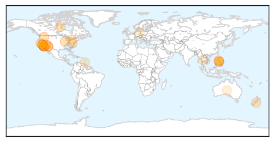

Influenza
30-Day Web Trend
0 alerts, 0 warnings

30-Day Twitter Trend
0 alerts, 0 warnings

Article Locations

Article Confidences

Top Articles:
- 0.997
- Across the USA, flu season winding down
- 0.984
- Experts predict heavy winter flu toll
- 0.971
- Missouri reports avian influenza at Carthage-area turkey farm
- 0.967
- Avian flu detected in Missouri turkey flock
- 0.963
- 2005 Central Florida State Fair E. coli Outbreak
- 0.951
- Officials hopeful that avian flu virus will be contained
- 0.951
- Flu Scan for Mar 09, 2015
- 0.922
- MDA confirms avian influenza in second Missouri facility
- 0.908
- Researchers assess causes of febrile illnesses in Tanzanian children
- 0.900
- Flu pandemic begins
- 0.894
- Avian flu confirmed at turkey farm near Asbury
- 0.819
- Avian influenza confirmed in Missouri turkey flock
- 0.734
- H5N2 strikes Missouri turkey farm
- 0.668
- Government to look into claims that stricter rules on school absenteeism led to illnesses spreading
- 0.518
- American Dryer's eXtremeAir Cold Plasma Clean(R) Technology Kills Influenza A Virus
Top Tweets:
-
No tweets found for Mar 09, 2015
Measles
30-Day Web Trend
0 alerts, 0 warnings

30-Day Twitter Trend
0 alerts, 0 warnings

Article Locations
Article Confidences

Top Articles:
- 0.990
- Measles Outbreak Continues to Spread
- 0.989
- Peninsula Warrior: Official News Publication Serving Joint Base Langley-Eustis, Virginia: The military authorized and official news, sports, photography and entertainment publication of Fort Eustis an
- 0.980
- Measles advisory issued for Vegas restaurant, expo attendees
- 0.973
- Dr. Neha Sharma: Measles mania
- 0.973
- Scare tactics aimed at vaccine skeptics may backfire
- 0.958
- Measles outbreak at 149 cases in eight states, Canada and Mexico
- 0.950
- More measles cases tied to Disneyland, Illinois day care
- 0.949
- California measles outbreak
- 0.946
- 14 infants exposed to measles return to Santa Monica day care center
- 0.936
- Potential Measles Exposure Sites Include Calif. Target, Walmart
- 0.923
- Possible measles exposure for library patrons
- 0.915
- Measles at Christchurch preschool
- 0.911
- Arizona official: Measles outbreak apparently winding down
- 0.875
- Despite D.C. measles cases, some refuse vaccination
- 0.867
- Doctors survey: Parents pressuring to delay shots
- 0.841
- Aliso Niguel High School
- 0.811
- Disney gave input on measles health messages
- 0.806
- Measles infections in California grow to 123
- 0.734
- A confirmed measles case prompts immunisation warning
- 0.697
- Anti-vaxxers among Canadians of all demographics, poll finds: ‘It could be your neighbour. That’s the scary thing’
- 0.601
- Mississippi, West Virginia toughest on school immunizations
- 0.569
- UN health agency urges Europe to step up measles vaccination
- 0.537
- Vaccinate against measles
- 0.525
- Pacifica School District asks parents to immunize against measles
- 0.516
- Vaccinate against measles
- 0.512
- Correction: Measles-California story
Top Tweets:
- 0.535
- Very few people (about 3 out of 100) who get 2 doses measles vax still get measles if exposed to the virus.